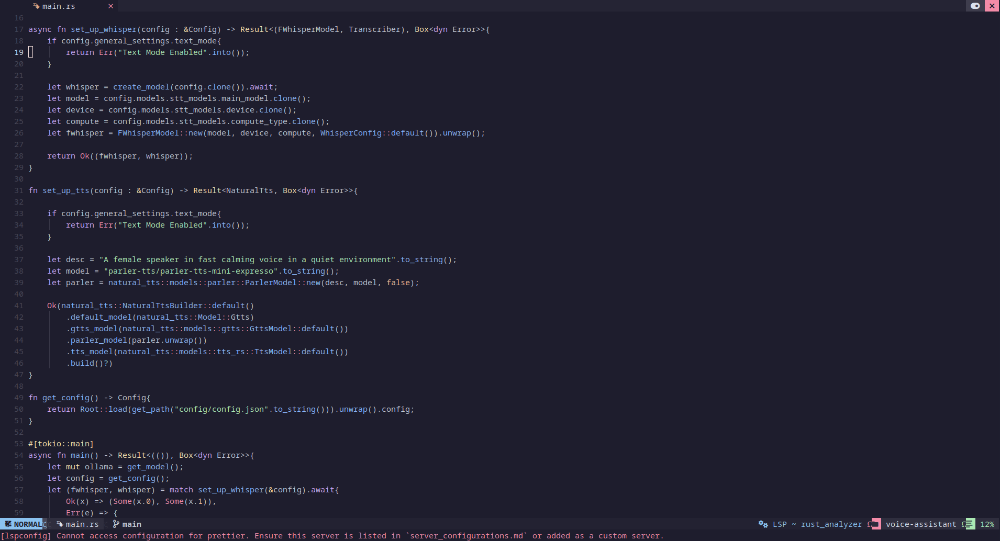

Sade are a set of programs and a device that were specifically designed to provide the help that elders need to survive and thrive in the 21st century.


SADE provides rural elders with the tools they need like an uncomplicated intuitive user interface, a voice assistant, an easy to use app and a smart, accessible device with a touch screen to perform essential everyday tasks like contacting friends and family or booking health appointments.

The SADE device makes use of a Raspberry PI 5 which makes it easily upgradeable and reusable as the device can be easily converted into a mini computer. The Raspberry PI 5 also makes the device fast and effeffecient and provides users with a framework of tools, addons and documentation already available.
